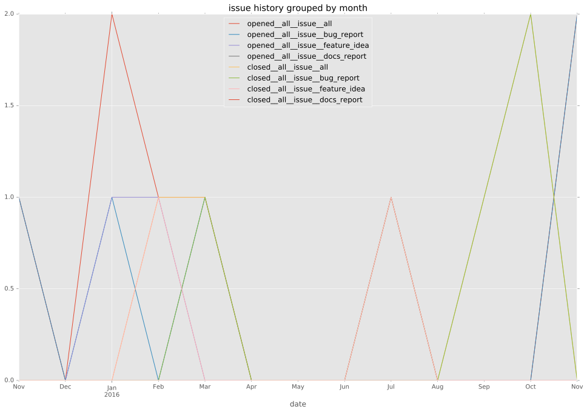
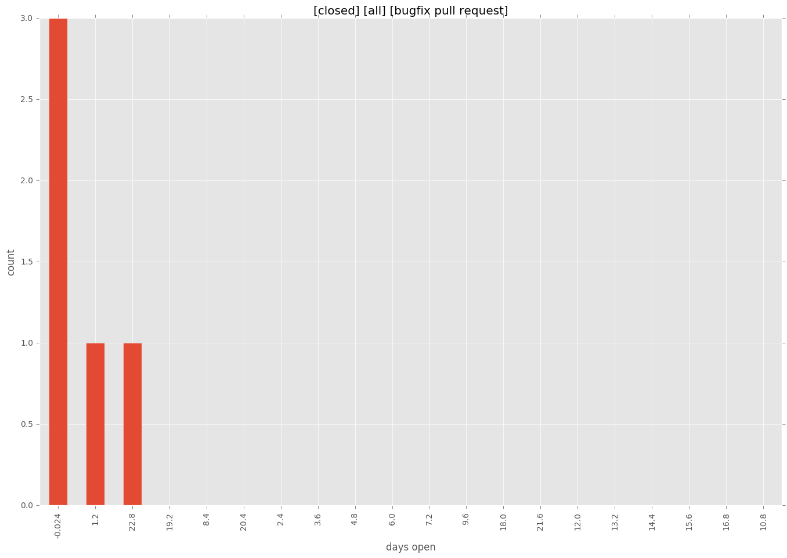

total issue counts
bugfix pull request: 5
pullrequest: 14
docs pull request: 1
feature pull request: 7
feature idea: 2
issue: 6
new plugin: 1
bug report: 4
issue history

pullrequest history
days open by issue type
feature pull request
count: 8
std: 61.816404434
min: 0
max: 188
median: 22.0
mean: 40.125
all
count: 27
std: 82.6989356649
min: 0
max: 265
median: 13.0
mean: 57.962962963
pullrequest
count: 0
std: nan
min: nan
max: nan
median: nan
mean: nan
docs pull request
count: 2
std: 0.0
min: 0
max: 0
median: 0.0
mean: 0.0
bugfix pull request
count: 9
std: 10.0967541539
min: 0
max: 24
median: 1.0
mean: 6.22222222222
feature idea
count: 2
std: 105.358910397
min: 13
max: 162
median: 87.5
mean: 87.5
issue
count: 0
std: nan
min: nan
max: nan
median: nan
mean: nan
new plugin
count: 2
std: 0.0
min: 186
max: 186
median: 186.0
mean: 186.0
bug report
count: 4
std: 99.0130462784
min: 45
max: 265
median: 165.5
mean: 160.25
closures grouped by total days open
